컨선이 지원 및 회복을 함께한 사람들
39000000명
*2021년 한 해 기준
우리의 관심이 만든 놀라운 변화
특별한 후원 영수증으로
투명하게 보여드릴게요!
1
후원 영수증을 만드는 방법
우리는
특별한 관심을 갖습니다.
특별한 관심을 갖습니다.
하루 1분마다 6명의 아이들을 잃는 곳
한국 사회가 겪었던 그 고통은
여전히 다른 곳에 남아있습니다.
여전히 다른 곳에 남아있습니다.
관심이 필요한 그 곳에서
아이들을 건강하게 지켜내는 일은
우리가 함께할 책임입니다. 세상의 미래인
아이들을 향한 관심
아이들을 건강하게 지켜내는 일은
우리가 함께할 책임입니다. 세상의 미래인
아이들을 향한 관심
우리의 특별한 관심이 24개국의
변화를 이끌어냈습니다.
변화를 이끌어냈습니다.
*2021년 한 해 기준
2
특별한 후원 영수증을 만드는 원칙
우리는 매년
특별한 선택을 합니다.
특별한 선택을 합니다.
세계기아지수 GHI 를 알고 계신가요?
- Global Hunger Index
- 전 세계 지역 및 국가 차원에서
기아를 종합적으로 측정하고 추적하는 도구
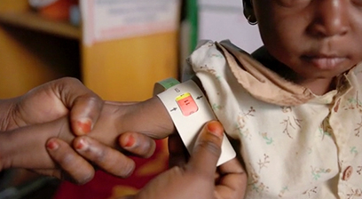
5세 미만 성장 발육 부진
5세 이전 유아 사망률 측정
5세 미만 저체중 아동
영양결핍 인구 비율
우리는 매년 세계기아지수 GHI 를 발간하고
특별한 관심이 필요한 곳을 찾아나섭니다.
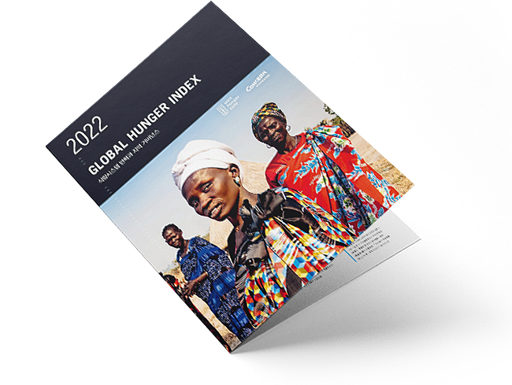
*세계기아지수는
전 세계 기아 현황을
객관적으로 보여주는
지표입니다.
활동 국가를전 세계 기아 현황을
객관적으로 보여주는
지표입니다.
최대 30개국으로 한정하여
가장 어려운 삶을 사는
0.5%에 집중합니다.
도움이 절실한 사람들을
우선적으로 돕고, 완전한 자립을 이루면
또 다른 곳으로 이동합니다.
우선적으로 돕고, 완전한 자립을 이루면
또 다른 곳으로 이동합니다.
우리는 구호품 전달을 넘어
한 사람의 존엄성을
지키기 위해 노력합니다.
우리의 특별한 선택이
영양실조와 재난현장에서 고통받는
31,800,000명의 존엄성을
지켜냈습니다.
영양실조와 재난현장에서 고통받는
31,800,000명의 존엄성을
지켜냈습니다.
*2021년 한 해 기준
3
변화를 만드는 후원 영수증
우리는
남다른 실천을 합니다.
남다른 실천을 합니다.
우리는 가난의 악순환을 끊어낼 수 있는
특별한 방법을 알고 있습니다.
진정한 자립을 이끌어내는
특별한 실천을 합니다.
특별한 방법을 알고 있습니다.
영양이 풍부한 간식 개발
지역 맞춤형 농업지원
기후변화 대응
특별한 실천을 합니다.
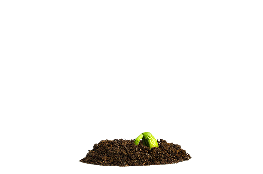
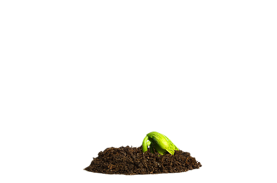
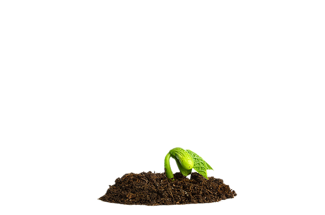

 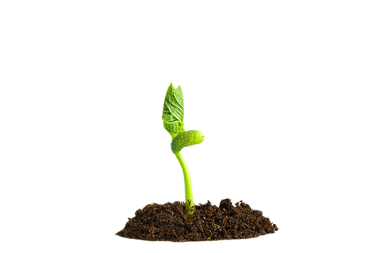
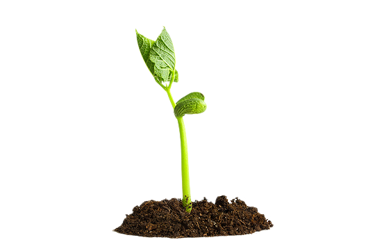
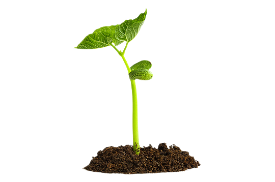
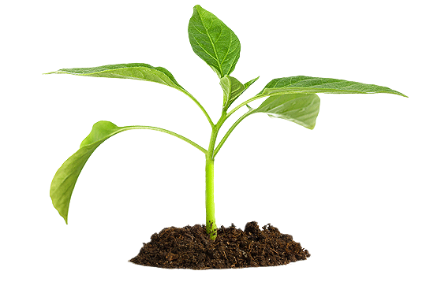
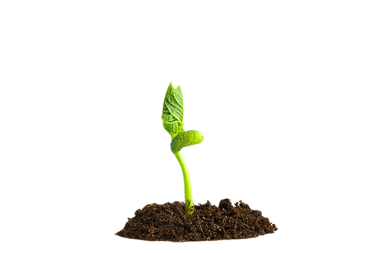
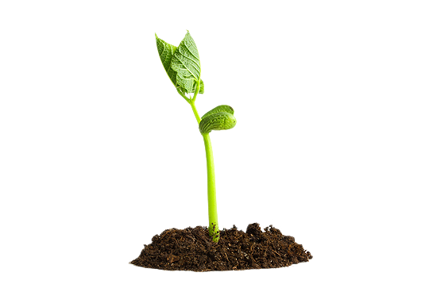
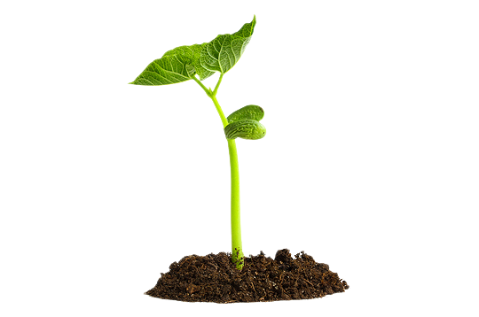
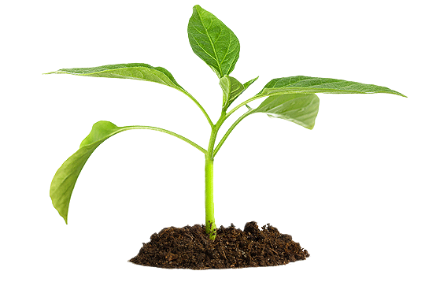
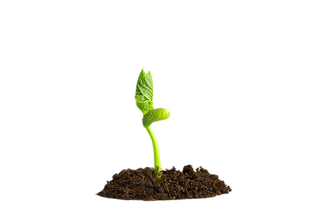
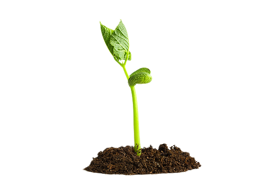
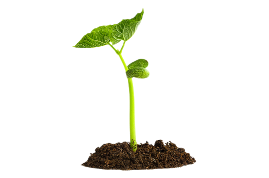
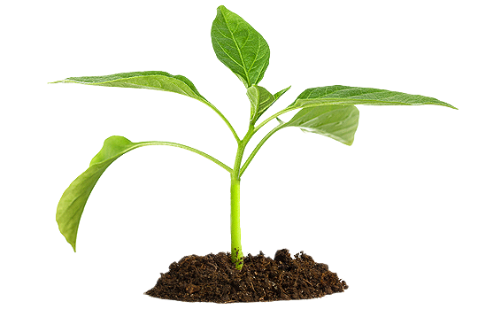
Subject 02
가정 텃밭
Kitchen Garden
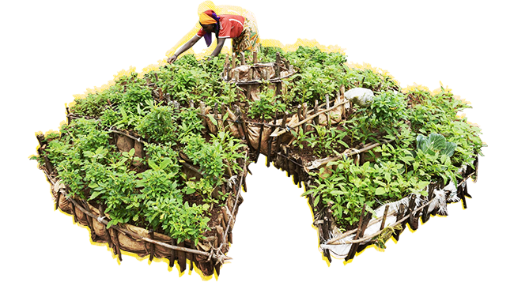
- Target:
- 여성 가장
- Nation:
-
차드 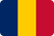
라이베리아

부룬디
- Details:
-
가정에서 텃밭을 가꿀 수 있는 환경을 마련하여
먹거리를 확보하고, 수익까지 이어지도록 지원
텃밭에서 자란 채소와 과일을 먹은 지
몇 개월 만에 아이들 건강이 많이 회복됐어요.
저는 요즘 이웃에게 제가 배운 비법을 공유해요.
아이를 건강하게 키우기 위한 최선의 방법이
무엇인지 알게 되었으니까요!
우리의 남다른 실천은
가난이 반복되는 72,000,000명의
자립을 도왔습니다.
가난이 반복되는 72,000,000명의
자립을 도왔습니다.
*2021년 한 해 기준
그러나 여전히
우리의 관심이 절실한 곳이
많습니다. 단 한 명도 포기할 수 없기에
우리의 노력은 멈출 수 없습니다.
우리의 관심이 절실한 곳이
많습니다. 단 한 명도 포기할 수 없기에
우리의 노력은 멈출 수 없습니다.
컨선의 특별한 후원 영수증은
따뜻한 관심이 모여 채워집니다. 변화를 만드는 아주 특별한 후원 영수증
지금 함께해주세요!
따뜻한 관심이 모여 채워집니다. 변화를 만드는 아주 특별한 후원 영수증
지금 함께해주세요!
우리의 관심은 아주 특별한 변화를 만듭니다